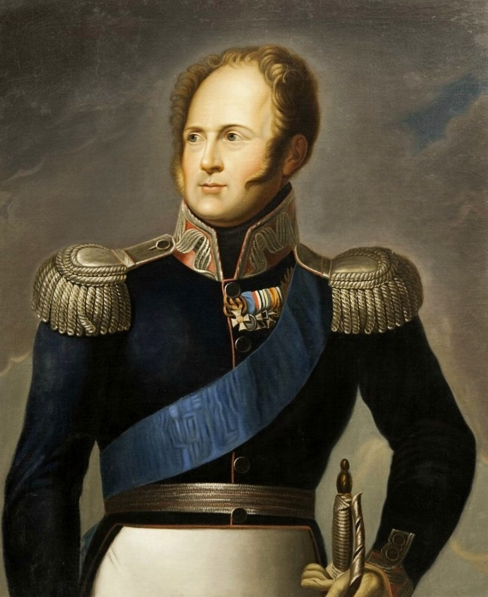
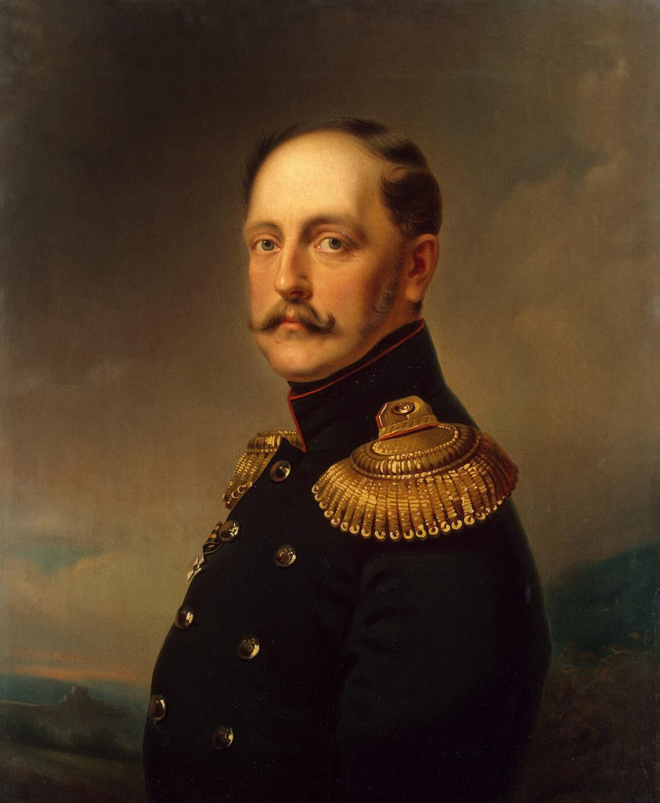
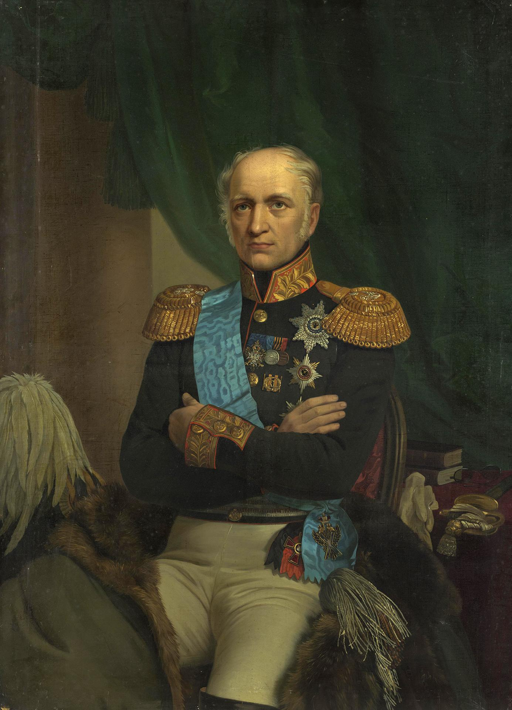

Налоговая реформа при Александре I

В период царствования Александра I были реформированы следующие виды налогообложения: оброчный сбор, гильдейский сбор, пошлина с наследств, горная подать, гербовый сбор, питейный сбор, вводятся процентный сбор с доходов от недвижимого имущества, кибиточная подать, попудный сбор с меди, существенному пересмотру подвергается система земских денежных и натуральных повинностей, реформируется система организации сбора налогов.
Проекты реформ в 1801—1804 гг. составлялись Негласным комитетом, в который входили П.А. Строганов, А. Чарторыйский, Н.Н. Новосельцев и В.П. Кочубей. Одним из основных исполнителей реформ был М.М. Сперанский. Он являлся автором нескольких важнейших проектов государственных реформ.
Проекты Сперанского в области денежного обращения, кредита и бюджета содержали следующие предложения: придать государственному бюджету законодательный характер; устранить бюджетные дефициты; подушные подати заменить подоходным налогом; обложить налогами лиц, пользующихся домашней прислугой, и взимать пошлины с владельцев тягловой силы; от винных откупов перейти к акцизной системе; создать центральный банк и др. Проект налоговой реформы был описан в работе Сперанского “План финансов”.
Налоговая система при Николае I

По Манифесту о короновании Николая I (22 августа 1826 г.) были прощены недоимки подушной подати за три года. В связи с проведением денежной реформы был издан Указ «О переложении подушного оклада на серебро и определении размера подати в сумме 95 копеек серебром на душу» (9 ноября 1839 г.). 13 июня 1851 г. были утверждены Устав и правила о земских повинностях (дорожной, почтовой, квартирной и др.) с возложением контроля на комитет о земских повинностях.
В первой половине XIX в. наряду с рассмотренными выше видами налогообложения вводятся акцизы на предметы массового потребления: в 1839 г. — на табак, в 1848 г. — на сахар и специальные государственные сборы.
В 1826 г. по проекту графа Е.Ф. Канкрина был восстановлен винный откуп. Откупщики обязаны были выкупать установленную норму вина из казны. В 1838 г. была упразднена монополия на продажу табака и введен акциз на нюхательный и курительный табак, взимаемый посредством бандеролей.
В 1834 г. был введен сбор с проезда по шоссе Санкт-Петербург — Москва. Взимались сборы с пассажиров железных дорог, пароходств, с железнодорожных грузов, сборы в морских портах. В разные годы устанавливались паспортные сборы, в том числе с заграничных паспортов, вводилось налогообложение полисов по страхованию от пожара. Кроме того, взимались пошлины с имущества, переходящего в порядке наследования или дарения.
В период 1823—1844 Министерство финансов Российской империи возглавлял выдающийся российский государственный деятель, граф Е.Ф. Канкрин. В это время окончательно сложилась система государственных финансов. Основу этой системы составляла подушная подать. За время управления Канкрина сумма поступлений прямых налогов была увеличена на 10 млн руб. серебром путем привлечения инородцев к платежу подушной подати и пересмотра налога на право торговли.

Существенные изменения были внесены в систему сбора косвенных налогов. С 1818 г. в России действовала казенная продажа вина. Канкрин восстановил откупную систему, что позволило увеличить питейные доходы на 81 млн руб. по сравнению с казенной продажей вина. При Канкрине был введен акциз на табак. В 1842 г. был увеличен гербовый сбор.
В середине XIX в. налоговое обложение крестьянства в России еще более возросло. В 1857 г. 70% всех прямых налогов составляли подушная и оброчная подати, а наибольшая часть косвенных налогов, сумма которых в два с половиной раза превышала сумму прямых налогов, приходилась на питейный сбор и соляной налог. Как прямые, так и косвенные налоги ложились главным образом на крестьянство.